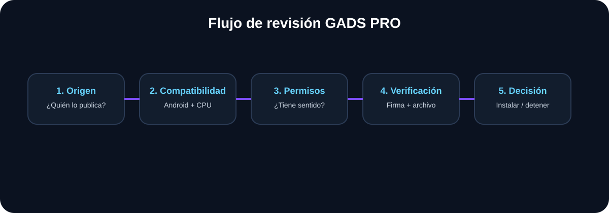

APK vs AAB: qué formato es cada uno y cuándo importa
Diferencias entre APK y Android App Bundle explicadas desde el punto de vista del usuario y del desarrollador.

Por qué importa
El APK es un formato instalable; AAB es principalmente un formato de publicación que permite generar APK optimizados para configuraciones de dispositivos. Este enfoque evita decisiones automáticas y ayuda a separar un problema real de una señal que solo parece preocupante.
Pasos recomendados
Identifica el archivo
Un archivo .apk está pensado para instalación; .aab normalmente se entrega a una plataforma de publicación.
Entiende la generación
Con AAB, la plataforma puede generar recursos y APK adecuados para el dispositivo.
No conviertas por intuición
Cambiar extensiones no convierte un paquete en otro formato válido.
Comprueba la fuente
Usa documentación del desarrollador o tienda para saber qué formato corresponde.
Verifica la firma
Las actualizaciones deben corresponder con la aplicación instalada y su firma.
Errores frecuentes
- Cambiar .aab por .apk renombrando: La extensión no transforma el contenido.
- Confundir publicación con instalación: AAB y APK cumplen funciones diferentes en el flujo de distribución.
Checklist antes de darlo por resuelto
- ☐ Diferencié publicación e instalación
- ☐ Comprobé la extensión real
- ☐ No renombré archivos para intentar convertirlos
- ☐ Revisé la fuente oficial
- ☐ Entendí el papel de la firma
Si el problema continúa
Documenta modelo del teléfono, versión de Android, versión de la aplicación, conexión utilizada y mensaje exacto. No borres datos ni cambies varios ajustes a la vez: hacerlo dificulta saber qué acción solucionó o provocó el problema.
Contenido relacionado
Fuentes y lectura adicional
Criterio práctico para este caso
Antes de cambiar una configuración relacionada con articulo-apk-vs-aab, conviene identificar el resultado que se busca y establecer una forma sencilla de comprobarlo. Esto evita aplicar cambios innecesarios y permite volver atrás si el resultado no es el esperado.
Define el síntoma y las condiciones en las que aparece.
Haz un cambio cada vez y anota qué ocurrió.
Repite la prueba y compara el resultado.
Límites y variaciones
La interfaz puede cambiar según fabricante, versión de Android, modelo y aplicación. Si el nombre de una opción no coincide con el de esta guía, busca el concepto equivalente en la configuración del dispositivo y contrástalo con la documentación oficial.